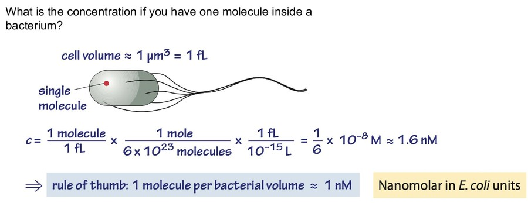
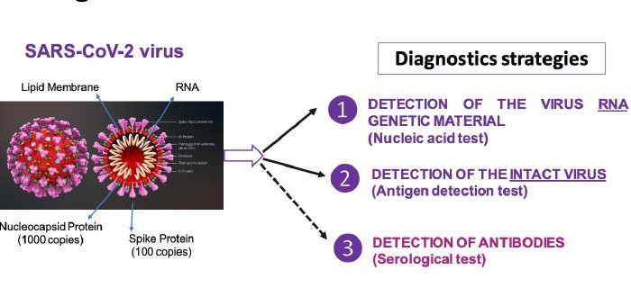
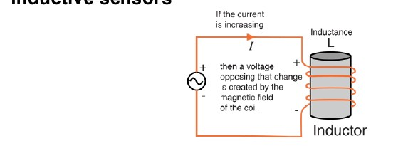
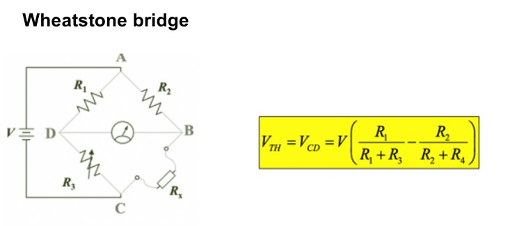

图 3-1：传感链路不是“传感器等于答案”
- 图里：左边的 measurand 是真实世界的被测对象，中间 sensor 把物理测量变量 \(X\) 转成信号变量 \(S\)，右边 display 再把信号变成读数 \(M\)。
- 读法：考试写工作原理时要按“被测量 - 换能 - 信号 - 显示/算法”四步写。只说“用了某材料”不够。
- 考点：校准发生在 \(S\) 与 \(X\) 或 \(M\) 的关系上；误差可能来自传感器、显示系统，也可能来自被测对象本身的扰动。
short review(1).pdf，按 medicalmmz 类讲义结构重写。
这份讲义把 PPT 中 26 页复习内容扩展成可独立学习的版本。主线是：被测对象产生刺激，传感器把刺激转成信号，系统用校准和统计方法把信号解释成可靠测量，最后进入生物检测、光学检测、免疫检测、核酸检测、物理传感器和医疗器械转化。
PPT 是复习提纲，很多页只给关键词和图。本讲义把它们展开成“你要会解释什么、会算什么、容易错什么”。页码对应 PDF 页码。
| PDF 页 | 主题 | 学习任务 | 考题常见问法 |
|---|---|---|---|
| 3 | Transfer function | 理解 \(S=f(X)\)，会解释线性、对数、指数、多项式响应。 | 给校准曲线或 Beer-Lambert Law，判断输入、输出、灵敏度。 |
| 4-7 | 传感器静态/动态特性 | 掌握 accuracy、precision、sensitivity、specificity、LOD、LOQ、SNR、response time 等。 | 比较两个传感器优劣；根据混淆矩阵计算灵敏度和特异性；解释超调。 |
| 8-9 | Biomarkers 与浓度直觉 | 能把生物标志物分成 molecular、histologic、radiographic、physiologic；能估算细胞体积中的分子浓度。 | 为什么单分子在细菌体积里就是 nM 量级？ |
| 10-12 | 酶传感与安培型葡萄糖传感 | 掌握 Michaelis-Menten、potentiometric/amperometric/conductometric、GOx 反应链。 | 解释第一代葡萄糖传感器如何把葡萄糖浓度转成电流。 |
| 13-14 | 分子光谱与 NIR | 理解 UV-vis、荧光、FTIR 的物理对象；掌握 650-950 nm 组织光学窗口。 | 为什么近红外适合组织成像？Beer-Lambert Law 如何定量？ |
| 15-17 | 免疫检测、ELISA、侧向层析 | 掌握 \(K_D\)、SPR、QCM-D、ELISA 类型和 lateral flow 结构。 | 比较 sandwich ELISA 与 competitive ELISA；解释 test line/control line。 |
| 18 | 核酸检测 | 理解 aptamer、PCR probe、Covid-19 的 RNA/抗原/抗体三类检测。 | RNA 检测、抗原检测、抗体检测分别回答什么问题？ |
| 19-24 | 物理传感器与 MEMS | 掌握电阻、电容、电感、压电、光纤、霍尔、MEMS 的输入输出关系。 | 给结构图，判断传感原理、信号类型和优缺点。 |
| 25 | 医疗器械分类 | 理解 FDA Class I/II/III 按风险与监管强度分类。 | 给设备例子，判断风险级别和监管要求。 |
输入 \(X\) 是被测刺激，输出 \(S\) 是传感器信号。校准的目标是反过来由 \(S\) 估计 \(X\)。
\(A\) 为吸光度，\(l\) 为光程，\(c\) 为浓度，\(\varepsilon\) 为摩尔吸光系数。
前者看患病者中检出多少，后者看健康者中排除多少。
\(\sigma_b\) 是空白噪声标准差，\(m\) 是校准曲线斜率。PPT 给了概念图，这里补常用计算式。
大 bulb volume 提高灵敏度，但增大时间常数；接触面积可改善响应速度。
分别描述上升时间、稳定时间、超调和相邻峰值衰减。
\([S]\ll K_M\) 时近似一阶；\([S]\gg K_M\) 时趋于饱和。
\(K_D\) 越小，结合越强；它的单位是浓度。
面积和介电常数增大，电容增大；板间距增大，电容减小。
用于把小电阻变化转成可测电压差。
这一节是对前面讲义的补强。PPT 是精简版，很多“真正要懂的东西”藏在图里：坐标轴、箭头、反应物、检测线、电极、梁结构和公式变量。下面按 PDF 页码把核心图裁出来逐个解释。












传感器不是直接给你“真实世界答案”，它先给出一个信号。传递函数描述真实刺激 \(X\) 与输出信号 \(S\) 的关系，校准则是用已知标准样本把这个关系估出来。
典型链路是：measurand 产生 physical measurement variable \(X\)，传感器输出 signal variable \(S\)，显示或算法给出 measurement \(M\)。考试时如果让你“说明传感器工作过程”，不要只说材料名，要按这条链路说明输入、换能机制、输出和校准。
线性响应 \(S=a+bX\) 最容易用，因为斜率就是灵敏度。但很多传感器受反应动力学、扩散、吸附位点饱和、电子学放大范围限制，会出现对数、指数、多项式或饱和响应。看到非线性响应时，先问：能否在小范围内线性近似？是否需要取对数或用标准曲线插值？
题目：某物质在固定波长下 \(\varepsilon=2.0\times10^4\ \mathrm{L\,mol^{-1}\,cm^{-1}}\)，比色皿光程 \(l=1.0\ \mathrm{cm}\)。测得 \(I_0/I=10\)。求浓度。
解释：这里输入 \(X\) 是浓度 \(c\)，输出 \(S\) 是吸光度 \(A\)。斜率 \(\varepsilon l\) 越大，同样浓度变化引起的吸光度变化越大，灵敏度越高。
传感器特性分静态和动态。静态特性回答“稳态值准不准、噪声大不大、能测多低、多宽”；动态特性回答“输入改变后多久跟上、是否超调、是否振荡”。
| 指标 | 一句话定义 | 直觉 | 常见错误 |
|---|---|---|---|
| Accuracy | 测量均值接近真值的程度。 | 靶心图中点群中心离靶心近。 | 把 accuracy 与 precision 混用。 |
| Precision | 重复测量彼此接近的程度。 | 点群聚得紧。 | 精密但不准确是可能的。 |
| Sensitivity | 输出随输入变化的斜率。 | 校准曲线越陡，单位输入变化越容易被看到。 | 把 sensitivity 与 specificity 混淆。 |
| Specificity | 识别目标而不响应非目标的能力。 | 健康者被判阴性的比例高。 | 只看阳性样本，不看假阳性。 |
| Linearity | 输出与输入是否近似直线关系。 | 线性范围内可用一个斜率描述。 | 把饱和区也拿来线性拟合。 |
| Hysteresis | 输入上升和下降路径得到不同输出。 | 加载/卸载曲线不重合。 | 只做单方向校准。 |
| LOD | 能可靠“看见”的最低量。 | 信号刚超过噪声。 | 把 LOD 当成可准确定量的最低点。 |
| LOQ | 能可靠“定量”的最低量。 | 通常高于 LOD。 | 报告低于 LOQ 的精确数值。 |
| SNR | 信号相对噪声强度。 | 越大越容易识别真实峰。 | 只看峰高，不看基线噪声。 |
| Repeatability | 同条件重复结果一致性。 | 同人同仪器同环境。 | 与 reproducibility 混用。 |
| Reproducibility | 不同条件下结果一致性。 | 不同人、不同仪器、不同实验室。 | 只在一个实验室验证就说可复现。 |
PPT 中列出 TP、FP、FN、TN。重点是分母不同：sensitivity 的分母是所有真正有病者，specificity 的分母是所有真正无病者。阳性预测值 PPV 和阴性预测值 NPV 虽不在 PPT 主图中，但常和前两者一起出现，受患病率影响很大。
题目：100 名患病者中检测阳性 92 人，100 名无病者中检测阳性 8 人。求 sensitivity 和 specificity。
易错点：如果题目把总人数、患病人数、阳性人数混在一起给，先画四格表再算，不要直接拿阳性总数当分母。
LOD 和 LOQ 的核心不是“有没有信号”，而是信号相对噪声是否足够可靠。PPT 图中 Peak A 到达 LOD，只能说明存在可检出信号；Peak B 到达 LOQ，才适合给出可信浓度数值。常见经验是 LOD 约为空白均值加 3 倍噪声标准差，LOQ 约为空白均值加 10 倍噪声标准差；若把信号换成浓度，则除以校准曲线斜率。
题目：空白噪声标准差 \(\sigma_b=0.015\ \mathrm{A.U.}\)，校准曲线斜率 \(m=0.30\ \mathrm{A.U./nM}\)。估计 LOD 和 LOQ。
解释：增大斜率或降低噪声都会降低 LOD/LOQ。单纯放大信号如果同时放大噪声，不一定改善 LOD。
PPT 用水银温度计说明 sensitivity \(k\) 与 time constant \(\tau\) 的权衡。更大的 bulb volume \(V_b\) 提高位移灵敏度，但也让系统热容量变大，响应变慢；更大的接触面积 \(A_b\) 和换热系数 \(U\) 有助于降低 \(\tau\)。
二阶响应常见振荡。rise time 是从 10% 到 90% 的时间；response time 或 settling time 是进入并保持在误差带内的时间；overshoot 是最大峰值超过稳态值的量；attenuation 描述相邻峰值衰减。
生物标志物是能被测量、并指示正常生物过程、病理过程或治疗响应的特征。传感课程关心的不只是“能不能检测”，还要知道标志物在哪个尺度、什么浓度、是否有干扰。
分子标志物，如血糖、蛋白、核酸、代谢物。传感器常直接识别分子结构或反应产物。
组织学或影像学标志物，如肿瘤组织形态、肿瘤大小。它们常通过图像或病理流程获得。
生理标志物，如血压、心率、体温。常与压力、位移、光学或电生理传感器相关。
PPT 用这个问题建立数量级直觉：细菌体积约 \(1\ \mu m^3=1\ fL=10^{-15}\ L\)。如果一个这样的体积里只有 1 个分子，摩尔浓度为：
因此经验规则是：一个细菌体积中的一个分子约等于 nM 量级。这能帮助你判断检测限是否足够。例如某传感器 LOD 为 100 nM，它对单细胞内单分子事件通常不够敏感；如果 LOD 到 pM 或 fM，才有机会观察稀有分子。
酶传感的基本想法是：酶把目标底物转成产物，产物或反应过程引起可测电信号。血糖传感器是最经典例子。
\(v_0\) 是初始反应速率，\([S]\) 是底物浓度，\(V_{\max}\) 是酶位点全部被充分利用时的最大速率，\(K_M\) 是速率达到 \(V_{\max}/2\) 时的底物浓度。它告诉你：低浓度时速率随浓度近似线性，高浓度时酶位点接近饱和，继续增加浓度也不能显著增加速率。
| 浓度范围 | 近似 | 传感意义 |
|---|---|---|
| \([S]\ll K_M\) | \(v_0\approx (V_{\max}/K_M)[S]\) | 适合定量，响应近似线性。 |
| \([S]=K_M\) | \(v_0=V_{\max}/2\) | \(K_M\) 可视为酶对底物亲和/工作范围的尺度。 |
| \([S]\gg K_M\) | \(v_0\approx V_{\max}\) | 系统饱和，高浓度区分能力下降。 |
测电压。典型问题是某种离子活度改变电极电位，例如 pH 电极、离子选择电极。
测电流。目标反应在电极上氧化还原，电流与反应速率和物质通量相关。葡萄糖传感器重点属于这一类。
测电导。反应改变溶液中离子浓度或迁移能力，从而改变电导。
PPT 中给出的核心反应链是：
生成的 \(H_2O_2\) 在 Pt 工作电极上被氧化：
电极收集电子形成电流，电流大小与 \(H_2O_2\) 产生速率相关，也就与葡萄糖浓度相关。第一代传感器的弱点也来自这里：它依赖氧气，并且高电位氧化 \(H_2O_2\) 时可能受到其他可氧化物质干扰。
题目：简述第一代 GOx 葡萄糖传感器如何测量血糖。
光谱传感的共同思想是：分子和光相互作用会改变光的强度、波长、相位或时间特性。不同光谱方法对应不同能级或分子运动。
| 方法 | 主要测什么 | 典型输出 | 适合回答的问题 |
|---|---|---|---|
| UV-vis | 电子跃迁导致的吸收 | 吸光度 \(A\) | 样品在某波长吸收多少，浓度是多少。 |
| Fluorescence | 吸收后发射光 | 荧光强度、发射波长 | 目标是否存在、荧光探针是否被激活。 |
| FTIR | 分子振动，包括伸缩和弯曲 | 红外吸收峰 | 有哪些官能团或化学键。 |
Beer-Lambert Law 把浓度与吸光度联系起来，但它不是无限适用。高浓度时分子间相互作用、散射、杂散光、仪器动态范围都可能破坏线性。因此定量时必须有标准曲线，并说明样品落在线性范围内。
PPT 的关键结论是：可见光尤其短波段被 hemoglobin 强吸收；当波长超过 650 nm，血红蛋白吸收显著降低；但超过 950 nm 后，水吸收明显增加。因此 650-950 nm 之间吸收较小，光能在组织中传播更深，适合近红外荧光成像和体内检测。
| 波段 | 主要限制 | 传感意义 |
|---|---|---|
| < 650 nm | 血红蛋白吸收强，散射也明显。 | 穿透浅，更适合表面或透明样品。 |
| 650-950 nm | 吸收相对较低。 | 组织光学窗口，适合深部荧光检测。 |
| > 950 nm | 水吸收增强。 | 穿透受到水吸收限制，热效应需考虑。 |
抗体传感的核心是分子识别：抗体与抗原特异结合，结合事件通过光、电、质量、折射率或颜色变化读出。
把抗体和抗原分别记为 \(A\) 和 \(B\)，复合物为 \(AB\)。结合速率与 \([A][B]\) 成正比，解离速率与 \([AB]\) 成正比。平衡时：
\(K_D\) 越小，说明在较低浓度下也能形成较多复合物，亲和力更高。考试中如果问“哪个抗体更好”，不能只看是否结合，还要看 \(K_D\)、交叉反应、稳定性和检测背景。
Surface plasmon resonance 通过表面折射率变化检测结合事件。抗原抗体结合改变金膜附近折射率，使共振角或响应信号变化。优点是可实时、无标记监测结合和解离。
Quartz crystal microbalance with dissipation 通过石英晶体频率变化和耗散变化反映表面质量加载与层的黏弹性。频率下降通常意味着表面吸附质量增加；耗散变化帮助判断层是刚性还是软/含水。
| 类型 | 基本流程 | 适合对象 | 结果解释 |
|---|---|---|---|
| Direct ELISA | 抗原固定，酶标一抗直接结合。 | 流程短、目标明确。 | 颜色越深通常目标越多。 |
| Indirect ELISA | 抗原固定，一抗结合，再加酶标二抗。 | 检测抗体或提高信号。 | 二抗提供放大，但增加非特异风险。 |
| Sandwich ELISA | 捕获抗体固定，夹住抗原，再用检测抗体读出。 | 蛋白、抗原定量，特异性高。 | 需要抗原有两个可被识别的表位。 |
| Competitive ELISA | 样品目标与标记目标竞争结合位点。 | 小分子或单表位目标。 | 样品越多，常见读出信号反而越低。 |
| Multiplex ELISA | 同时检测多个目标。 | 细胞因子、多标志物面板。 | 需要防止交叉反应和信号串扰。 |
侧向层析试纸由 sample pad、conjugate pad、nitrocellulose membrane、wicking pad 等组成。样品沿毛细作用流动，带着标记抗体或纳米颗粒移动。test line 上固定的识别分子捕获目标复合物，显示阳性；control line 捕获流过的标记物，证明液体流动和试剂有效。若 control line 不出现，无论 test line 如何，都应判为无效。
核酸检测把“序列互补”和“扩增”作为核心放大机制。PPT 同时把 aptamer 放在这里，因为 aptamer 本身是可折叠的核酸识别分子，能像抗体一样结合目标。
Aptamer 是筛选得到的短 DNA/RNA 序列。它不是靠 Watson-Crick 配对识别另一条核酸，而是折叠成三维结构后与蛋白、小分子或细胞表面目标结合。优点是可化学合成、易修饰、批间差异小；限制是结构受离子强度、温度和样品基质影响。
TaqMan 探针使用双标记荧光水解探针，扩增时探针被聚合酶水解，荧光与淬灭基团分离，信号上升。FRET 杂交探针依赖供体和受体距离变化。共同点是把序列特异性转换成荧光信号。
| 检测对象 | 检测材料 | 代表方法 | 回答的问题 | 主要限制 |
|---|---|---|---|---|
| 病毒 RNA | 遗传物质 | RT-PCR、等温扩增 | 样品中是否有病毒核酸。 | 采样、提取、污染控制和扩增抑制。 |
| 完整病毒/抗原 | 核衣壳蛋白、刺突蛋白等 | 抗原快检、免疫层析 | 是否存在较多病毒蛋白。 | 灵敏度通常低于核酸扩增。 |
| 抗体 | 宿主免疫反应 | 血清学检测 | 是否曾感染或产生免疫应答。 | 不能直接等同当前感染；有时间窗口。 |
物理传感器部分的学习重点是“输入变量改变了哪个电学量”。只要能说清电阻、电容、电感、电压、频率或相位如何随输入变化，就抓住了主线。
滑动触点位置改变有效电阻，输出电压按分压关系变化。优点是直观、成本低；缺点是机械接触带来磨损、摩擦和寿命问题。
拉伸使导体长度增加、截面积减小，电阻通常增大；压缩时电阻减小。应变片对轴向应变敏感，对横向力可能不敏感，因此安装方向很关键。
Wheatstone bridge 用于把很小的电阻变化变成差分电压：
桥路平衡时输出为零；某一臂电阻因应变变化，桥路失衡，输出电压就能反映应变大小。
压力可改变板间距 \(d\)，液位可改变介电常数 \(\varepsilon_r\)，触摸可引入手指电容，人体穿戴传感可利用身体与电极间耦合电容。
线圈电流变化产生磁场，磁场变化又产生感应电压。位移、金属接近、磁芯位置变化都可改变电感或耦合。它适合非接触测量，但对电磁干扰和环境金属敏感。
压电材料在机械应力下产生电荷/电压；反过来，施加电场也会让材料形变，这叫逆压电效应。PPT 中举例包括 quartz crystals、sucrose、DNA、silk、tendon。压电压力传感器特别适合动态、快速或微小压力变化，因为变化越快越容易产生明显电荷输出；但纯静态长期压力测量会受到电荷泄漏和漂移限制。
| 类型 | 输入改变什么 | 输出读什么 | 典型优点 |
|---|---|---|---|
| Intensity-modulated fiber | 弯曲、压力或吸收改变光强。 | 输出光强。 | 结构简单，远距离传输。 |
| Wavelength-modulated fiber | 应变/温度改变光栅周期或折射率。 | 反射/透射波长。 | 抗强度波动，适合多点复用。 |
| Phase-modulated fiber | 光程差变化。 | 干涉相位。 | 高灵敏度。 |
| Hall sensor | 磁场使载流子受洛伦兹力偏转。 | 横向 Hall voltage。 | 可测磁场、位置、磁珠标记。 |
| MEMS | 微梁、质量块、薄膜受力或加速度变化。 | 电容、压电、热或微流控信号。 | 小型化、批量制造、可集成。 |
题目：平行板电容压力传感器中，压力使两极板距离 \(d\) 减小。输出电容如何变化？
最后一页把课程引到转化与监管。医疗器械分类不是按技术先进程度，而是按风险和所需监管控制强度。
| 类别 | 风险 | 监管控制 | PPT 例子 | 判断思路 |
|---|---|---|---|---|
| Class I | 低 | General controls | 牙线、医用剪刀、牙科注射器 | 失效通常不会造成严重伤害，结构和用途相对简单。 |
| Class II | 中 | General controls + special controls | 电动轮椅、MRI、临床水银温度计 | 需要性能标准、特殊标识或上市后控制来保证安全有效。 |
| Class III | 高 | General controls + premarket approval | 体外除颤器、人工心脏瓣膜 | 维持生命、植入人体或失效可能造成严重伤害。 |
下面的题不追求覆盖所有细枝末节，而是训练 PPT 最可能考的概念链路。建议先自己回答，再展开参考答案。